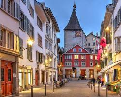
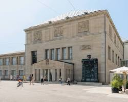
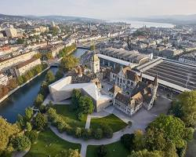
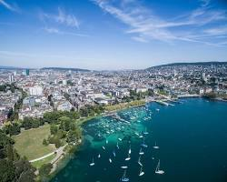
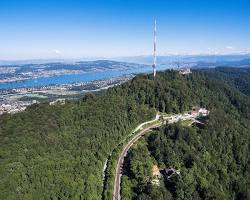
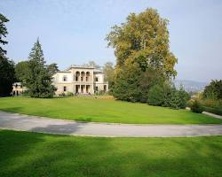
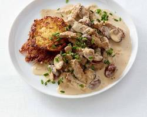
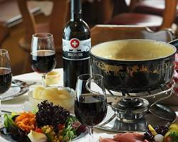
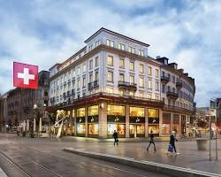

Click in any field below to hear the sentence read aloud.
Click in any field below to reveal a translation.
| Geschichte und Kultur: Altstadt: Das Herzstück Zürichs ist die Altstadt, ein Labyrinth aus gepflasterten Gassen, historischen Zünften und malerischen Plätzen. Hier kannst du die Fraumünsterkirche mit ihren fünf berühmten Chagall-Fenstern bewundern oder die Grossmünsterkirche mit ihrem Zwillingsturm besteigen, von dem aus du einen fantastischen Blick auf die Stadt hast. |
 |
History and culture:
Altstadt: The heart of Zurich is the old town, a labyrinth of paved alleys, historical guilds and picturesque places. Here you can admire the Fraumünsterkirche with its five famous Chagall windows or climb the Grossmünsterkirche with its twin tower, from which you have a fantastic view of the city.
| Kunsthaus Zürich: Liebhaber der modernen Kunst kommen im Kunsthaus Zürich auf ihre Kosten. Die Sammlung umfasst Werke von Monet, Picasso, Giacometti und vielen anderen berühmten Künstlern. |  |
| Nationalmuseum: Das Schweizerische Nationalmuseum erzählt die Geschichte der Schweiz von der Vorgeschichte bis zur Gegenwart. Die Dauerausstellung zeigt spannende Objekte aus den Bereichen Archäologie, Kunst und Volkskunde. |  |
Natur und Freizeit: Zürichsee: Der Zürichsee ist ein beliebtes Ziel für Schwimmen, Bootfahren, Stand-up-Paddling und Spaziergänge am Ufer. Im Sommer kannst du in einem der zahlreichen Strandbäder die Sonne geniessen. |
 |
Nature and leisure:
Lake Zurich: Lake Zurich is a popular destination for swimming, boating, stand-up paddling and walks on the bank. In summer you can enjoy the sun in one of the numerous beach baths.
| Uetliberg: Der Uetliberg ist der Hausberg Zürichs und bietet einen atemberaubenden Panoramablick über die Stadt, den See und die Alpen. Mit der Uetlibergbahn kannst du bequem auf den Berg fahren und dort wandern, essen gehen oder einfach die Aussicht geniessen. |  |
| Rieterpark: Der Rieterpark ist eine wunderschöne Parkanlage am Ufer des Zürichsees. Hier kannst du dich im Grünen entspannen, spazieren gehen oder ein Picknick machen. |  |
Essen und Trinken: Zürcher Geschnetzeltes: Dieses traditionelle Gericht besteht aus Kalbsfleisch, Pilzen und Rahm und wird oft mit Rösti serviert. |
 |
Food and Drink:
Zurich sliced meat: This traditional dish consists of veal, mushrooms and cream and is often served with roasted potatoes.
| Fondue: Natürlich darf auch Fondue bei einem Besuch in Zürich nicht fehlen. Dieses geschmolzene Käsegericht ist ein echter Schweizer Klassiker und schmeckt am besten in einem gemütlichen Chalet. |  |
| Sprüngli: Die Confiserie Sprüngli ist eine Institution in Zürich und berühmt für ihre köstlichen Schokoladen und Pralinen. |  |